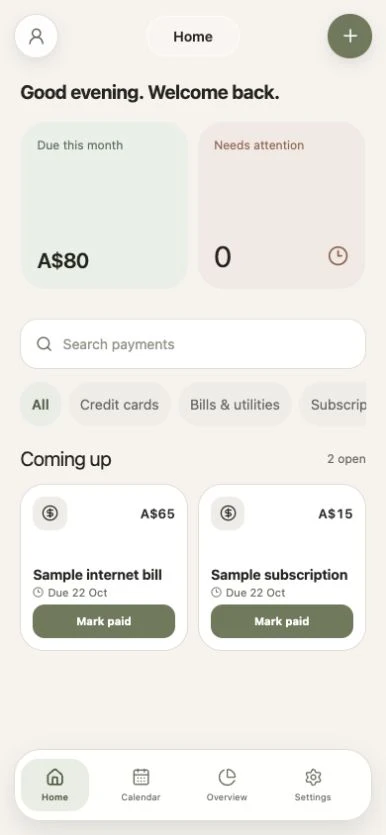
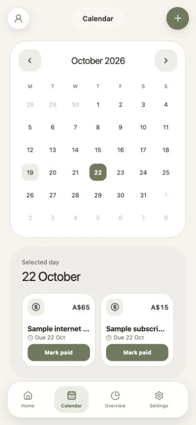

The task
Keep recurring bills, payment history and shared costs in one place without making everyday actions hard to find.
I designed and built a bill-tracking app around three questions: what's due, when is it due, and has it been paid?
Your next payments
A$80
2 bills upcoming
Internet
22 Oct
Subscription
22 Oct
No bills here yet.
Keep recurring bills, payment history and shared costs in one place without making everyday actions hard to find.
Four-tab navigation, bill cards, a due-date calendar and distinct states for bills and shared balances.
The interface, recurring-bill logic, sign-in and stored records. An iOS build is uploaded for internal TestFlight testing.
Home surfaces bills and their due dates. Each card keeps its payment action in a consistent place. Marking paid records the payment and creates the next recurring bill once. Paidly records balances; it does not move money.
I reduced six navigation items to four: Home, Calendar, Overview and Settings. Payment history sits in Settings rather than taking another tab.
Bill cards reserve space for the payment button. I adjusted long titles, dates and spacing after checking narrow layouts at 320 and 390 pixels.
Bill markers sit inside each date cell without moving the date number. Selecting a date brings its bills below the calendar.


A bill being paid to a merchant is different from everyone settling a shared balance. Those states stay separate so one action does not imply both.
I worked on the flows, reusable UI and implementation together. Layout checks caught a header covering content and cramped bill-card actions, which I corrected.
Two-account split syncing and alerts on physical devices remain unverified. This is an implemented design with internal testing, not a claim of measured user outcomes.
TypeScript · React Native · Expo · Supabase · PostgreSQL